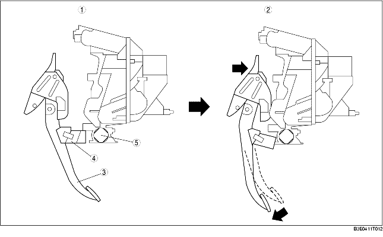

• In a frontal collision, the brake pedal is forced rearward by the movement of the engine and other parts.
• Pedal arm section A of the rearward moving brake pedal contacts the cross-beam.
• Pedal arm section A rotates where it contacts the cross-beam, preventing rearward movement of the brake pedal.

.